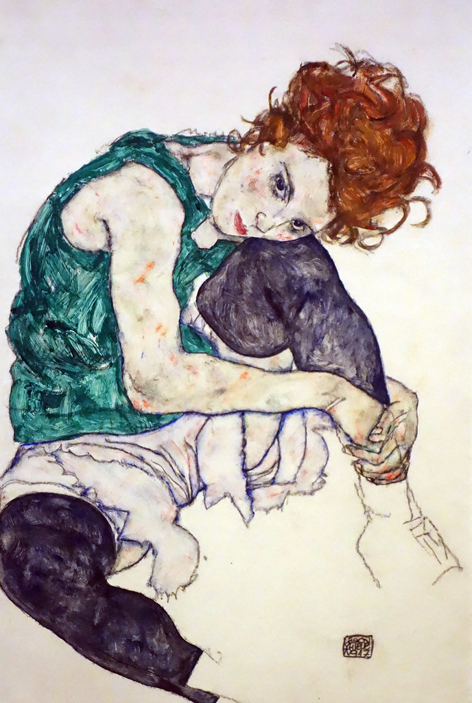

Egon Schiele was born in 1890 in Tulln, Austria. He was obsessed with trains as a child and was generally isolated because most other children saw him as odd. He did well in sports and arts, but not in traditional academics. Schiele lost his father when he was only 14 and was subsequently sent to live with his mother’s brother. Schiele was encouraged to apply to Klimt’s alma mater, the School of Arts and Crafts in Vienna.
Gustav Klimt reached success in 1907 and was giving back to the Viennese art scene by mentoring young students. Schiele knew of this and decided to seek him out. Klimt was interested in Schiele: he bought and traded drawings with him, and introduced the young artist to his rich network.

Egon Schiele, Self-Portrait with Chinese Lantern and Fruits, 1912. Media: oil and body colour, wood. Location: Leopold Museum, Vienna, Austria.
Schiele’s art around this time is clearly influenced by Klimt and the Art Noveau style. He left school after three years and began to exhibit his own work. His work around this time explored sexuality and eroticism, characterized by the distortion of the human figure. Schiele elongated limbs, enlarged joints, and drew on the features of his subjects.
People thought of his work as uncomfortable: subjects were shown sickly and pale, often in the nude. He worked against conventional beauty standards and rigid academia.
Egon Schiele, Seated Woman with Bent Knee, 1917. Media: crayon, gouache, and watercolor, paper. Location: National Gallery of Prague, Prague, Czech Republic.
Schiele married Edith Harms in 1915 and was enlisted in World War I immediately afterward. He held exhibitions of his work throughout his military service, with shows in Prague, Zürich, and Dresden. He was free to return to working full-time in 1917.
Schiele died of the Spanish flu in 1918 three days after his pregnant wife. This is the same year and disease that killed his mentor Gustav Klimt.